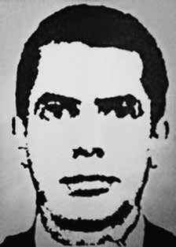

Sérgio
Roberto
Corrêa
CIRCUNSTÂNCIAS DA MORTE
Sérgio Roberto Corrêa morreu no dia 4 de setembro de 1969, quando o carro no qual se encontrava, com seu companheiro de militância Ishiro Nagami, explodiu. A falsa versão veiculada era de que o fusca azul onde se encontravam os militantes explodiu por volta das cinco horas da manhã, na rua da Consolação, em São Paulo (SP), danificando o prédio de quatro andares localizado a poucos metros de distância. Sérgio Roberto morreu imediatamente. A imprensa também noticiou que o corpo de Ishiro ficou jogado na calçada por algum tempo, até que os policiais o levaram ao Hospital das Clínicas, onde não resistiu, vindo a falecer. Ainda, de acordo com tal versão, os dois militantes da Ação Libertadora Nacional (ALN) supostamente conduziam explosivos no interior do Volkswagen com o intuito de provocar um atentado contra a sede da Nestlé, localizada a poucas quadras do local da explosão. A documentação localizada pela CNV sugere, contudo, a existência de indícios de que as forças de segurança procuravam Sérgio Roberto desde, pelo menos, junho de 1969, por atribuírem-lhe diversas ações armadas. Por semelhante modo, foram encontrados documentos produzidos pelos órgãos de segurança e repressão que acusavam Sérgio de participação em atentado à bomba ocorrido no dia 16 de junho de 1969. Conforme essa documentação, Sérgio seria integrante do Grupo Tático Armado (GTA) da Ação Libertadora Nacional (ALN), adotando o codinome Gilberto. Os registros apontam, ainda, para sua suposta participação em um curso sobre explosivos ministrado pelo militante Hans Rudolf Manz. O relatório de Inquérito Policial Militar (IPM) que foi apresentado pela Secretaria de Segurança Pública de São Paulo registra outras acusações contra Sérgio. O inquérito, que havia sido instaurado no “escopo da apuração das atividades subversivo-terroristas da organização denominada Ação Libertadora Nacional”, acusa Sérgio de ser coautor de assalto à agência do Banco do Brasil no município de Utinga em julho de 1969. Por seu turno, a Comissão dos Familiares de Mortos e Desaparecidos políticos, no livro Dossiê ditadura: Mortos e Desaparecidos Políticos no Brasil (1964-1985) menciona que o carro dos militantes poderia estar sendo perseguido por outro veículo no momento da explosão e destaca que Ishiro Nagami teria sido levado ao hospital, onde foi forçado a informar o endereço de sua residência antes de morrer, fato ratificado pelo livro “A autopsia do medo”, do jornalista Percival de Souzai . Sérgio Roberto Corrêa teve o corpo completamente destroçado e foi enterrado como indigente no Cemitério da Vila Formosa, em São Paulo.
Sérgio Roberto Corrêa died on September 4, 1969, when the car he was in, with his fellow activist Ishiro Nagami, exploded. The false version circulated was that the blue Beetle where the militants were located exploded around five in the morning, on Rua da Consolação, in São Paulo (SP), damaging the four-story building located a few meters away. Sérgio Roberto died immediately. The press also reported that Ishiro's body was left lying on the sidewalk for some time, until the police took him to the Hospital das Clínicas, where he did not resist and died. Furthermore, according to this version, the two militants from Ação Libertadora Nacional (ALN) were allegedly carrying explosives inside the Volkswagen with the intention of provoking an attack on Nestlé's headquarters, located a few blocks from the explosion site. The documentation located by the CNV suggests, however, the existence of evidence that the security forces had been looking for Sérgio Roberto since at least June 1969, having attributed several armed actions to him. In a similar way, documents produced by security and repression bodies were found that accused Sérgio of participating in a bomb attack that occurred on June 16, 1969. According to this documentation, Sérgio was a member of the Armed Tactical Group (GTA) of Ação Libertadora Nacional (ALN), adopting the code name Gilberto. The records also point to his alleged participation in a course on explosives taught by militant Hans Rudolf Manz. The Military Police Inquiry (IPM) report presented by the São Paulo Public Security Secretariat records other accusations against Sérgio. The investigation, which had been launched within the “scope of investigating the subversive-terrorist activities of the organization called Ação Libertadora Nacional”, accuses Sérgio of being a co-author of the robbery at the Banco do Brasil branch in the municipality of Utinga in July 1969. For its part, the Commission of the Relatives of Political Dead and Disappeared, in the book Dossier dictatorship: Political Dead and Missing in Brazil (1964-1985) mentions that the militants' car could have been chased by another vehicle at the time of the explosion and highlights that Ishiro Nagami would have been taken to the hospital, where he was forced to give his home address before he died, a fact ratified by the book “The Autopsy of Fear”, by journalist Percival de Souzai. Sérgio Roberto Corrêa's body was completely destroyed and was buried as a pauper in the Vila Formosa Cemetery, in São Paulo.
Sérgio Roberto Corrêa murió el 4 de septiembre de 1969, cuando explotó el automóvil en el que viajaba con su compañero activista Ishiro Nagami. La versión falsa que circuló fue que el Escarabajo azul donde se encontraban los militantes explotó alrededor de las cinco de la mañana, en la Rua da Consolação, en São Paulo (SP), dañando el edificio de cuatro pisos ubicado a pocos metros de distancia. Sergio Roberto murió inmediatamente. La prensa también informó que el cuerpo de Ishiro quedó tirado en la acera por algún tiempo, hasta que la policía lo llevó al Hospital das Clínicas, donde no resistió y murió. Además, según esta versión, los dos militantes de la Asociación Libertadora Nacional (ALN) presuntamente portaban explosivos dentro del Volkswagen con la intención de provocar un ataque a la sede de Nestlé, ubicada a pocas cuadras del lugar de la explosión. La documentación localizada por la CNV sugiere, sin embargo, la existencia de pruebas de que las fuerzas de seguridad buscaban a Sérgio Roberto desde al menos junio de 1969, atribuyéndole varias acciones armadas. De manera similar, fueron encontrados documentos elaborados por órganos de seguridad y represión que acusaban a Sérgio de participar en un atentado con bomba ocurrido el 16 de junio de 1969. Según esa documentación, Sérgio era integrante del Grupo Táctico Armado (GTA) de la Acción Libertadora Nacional (ALN), adoptando el nombre clave de Gilberto. Los registros también señalan su presunta participación en un curso sobre explosivos impartido por el militante Hans Rudolf Manz. El informe de la Investigación de la Policía Militar (IPM) presentado por la Secretaría de Seguridad Pública de São Paulo registra otras acusaciones contra Sérgio. La investigación, que había sido iniciada en el “ámbito de la investigación de las actividades subversivas-terroristas de la organización Acción Libertadora Nacional”, acusa a Sérgio de ser coautor del robo en la sucursal del Banco do Brasil, en el municipio de Utinga, en julio de 1969. Por su parte, la Comisión de Familiares de Muertos y Desaparecidos Políticos, en el libro Dossier dictadura: Muertos y Desaparecidos Políticos en Brasil (1964-1985) menciona que el auto de los militantes podría haber sido perseguido por otro vehículo en el momento de la explosión y destaca que Ishiro Nagami habría sido trasladado al hospital, donde fue obligado a dar su domicilio antes de morir, hecho ratificado por el libro “La autopsia del miedo”, del periodista Percival de Souzai. El cuerpo de Sérgio Roberto Corrêa quedó completamente destruido y fue enterrado como indigente en el cementerio de Vila Formosa, en São Paulo.